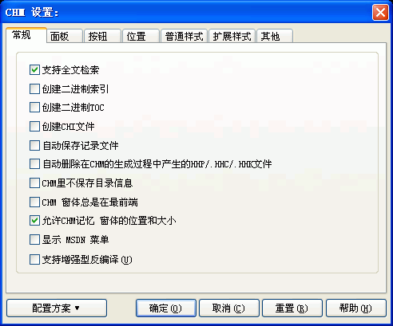

您可以通过在编译设置对话框里按"CHM设置..."按钮, 然后在"CHM设置"对话框里选取"常规"跳格看到这个对话框。关于这个对话框的使用请看下面的具体描述.

支持全文检索:
决定Easy CHM是否制作带全文检索的CHM文件.
快速全文检索是CHM格式的一个重要功能，全文检索支持在正文里高亮显示搜索到的关键词.
支持全文检索的CHM文件大小将会增加，因为CHM里保存了相应的检索信息，以便实现快速检索。
选择 支持全文检索 则Easy CHM在制作过程中会将全文检索信息包括在CHM中。
全文检索只对文件名是.h*的源文件有效，也就是说：在CHM里您只能在源文件名是.htm/.html的网页文件里进行检索，在CHM里您无法检索源文件名是.txt或.shtml之类的文件里的内容；基于CHM格式的这一特性，如果您不希望某个文件的内容在CHM里被检索，可以在制作前修改源文件的文件名就可以实现，比如把原来的文件名1.html修改为1.shtml。
为了正常使用CHM强大的全文检索功能 ,请注意以下几点：
创建二进制索引:
决定是否以二进制形式保存CHM的索引列表-特别是对于索引项目比较多的时候，如果使用二进制格式，在打开CHM文件时，可以大大加快文件打开的速度。
创建二进制TOC:
决定是否以二进制形式保存CHM的目录列表-特别是对于目录项目比较多的时候，如果使用二进制格式，在打开CHM文件时，可以大大加快文件打开的速度。
但是，选中这个选项后，您在CHM目录里的自定义图标将被忽略-CHM将只显示两种基本图标。
如果您希望在CHM的工具栏显示支持顺序浏览的“上一步”、“下一步”这两个按钮，则您必须先选中创建二进制TOC，只有这样，制作好的CHM文件的工具栏上才会显示
“上一步”、“下一步”这两个按钮.
创建二进制TOC也会带来很多不利的影响，比如使用全文检索的时候无法正常返回当前网页标题的主题；CHM目录里的自定义图标将被忽略（只显示两种基本图标）；这样制作的CHM文件无法与其他CHM文件合并。
对于普通用户，或者对于那些不希望使用“上一步”、“下一步”这两个按钮的用户，或者对于那些比较看中自定义图标或全文检索的用户，作者建议您不要选中这个选项，程序默认不选。
创建CHI文件:
决定是否把CHM的目录索引等信息分开保存在单独的与CHM同名的.chi文件里-这样的好处是对提高CHM打开时的速度有帮助，但是，不利的地方是：在分发制作好的CHM文件给其他人时，也必须同时提供这个与CHM文件同名的.chi文件，否则将打不开CHM文件。所以作者不建议大家选中这个选项--除非您的CHM目录或索引信息过于庞大，作者建议您不要选中这个选项，程序默认不选。
自动保存记录文件:
决定在编译的过程中是否保存整个编译过程的所有信息.
当您遇到CHM编译失败无法生成CHM的情况时，建议选中这个选项，您可以查看编译过程的记录信息，找到是卡壳在哪个具体的文件，这样可以方便您分析或排除文件里的错误，找到编译失败的原因，以便成功编译CHM。
如果设置了 自动保存记录文件 则程序会自动在CHM工程文件所在的根目录下生成一个'_ecErrorLog.Log'的记录文件。
导致CHM编译失败的主要因素（供您分析失败原因时参考）：
自动删除在CHM的生成过程中产生的HHP/.HHC/.HHK:
决定Easy CHM是否自动删除编译CHM的标准工程文件-仅注册用户可以设置这个选项。
如果您使用的是未注册版本，程序都将自动删除全部的HHP/.HHC/.HHK标准工程文件-无论是否选中。
CHM里不保存目录信息:
决定CHM文件里的内部文件列表是否包括目录信息.
请务必慎用此选项，通常情况下您可以忽略这个选项--不要选中，程序默认不选。
什么情况下需要选中CHM里不保存目录信息这个选项呢？
当您的源文件全部都在同一个目录下（任何子目录或其他目录下都没有您需要的源文件），选中这个选项可以从一定程度上避免把子目录或其他目录下的文件压缩到CHM文件里（CHM里不保存目录信息就意味着有覆盖同名文件内容的风险），以避免CHM文件臃肿。
需要注意的是：
如果您指定的网页里指向了其他目录下的文件，尽管您选中了CHM里不保存目录信息，微软的CHM编译器仍会尝试着把指定的文件加入到CHM里--但是去掉了该文件的目录信息，如果这个文件与您当前目录下的文件同名，则会造成不必要的文件覆盖，也就是说：您制作的CHM可能会存在错误。规避这种情形发生有两种方法：
其中，第一点尤其重要，特别是当您不希望制作臃肿的包括很多无关文件的CHM时。
在以下两种情况下，请千万不要选中CHM里不保存目录信息，以免丢失文件，造成CHM显示不正常或图片无法显示：
CHM里不保存目录信息这个选项对于像“电子文档处理器”那种支持批量制作CHM文件的程序非常有意义，因为可以防止把不必要的文件添加到CHM文件里。
选择 CHM里不保存目录信息 则CHM将不会保存任何目录信息--注意：如果两个文件的文件名完全相同，其中一个的文件内容将被另一个覆盖。
CHM窗体总是在最前端:
决定CHM窗体是否总在其他窗体之上。
允许CHM记忆窗体的位置和大小:
决定CHM是否记忆当前的窗体位置和大小，以便下次使用。
不选则每次CHM都使用制作时候定义的窗体位置及大小。
显示MSDN菜单:
决定是否显示MSDN的菜单。
支持增强反编译:
决定是否支持最大限度的恢复CHM的编译信息.
这个选项目前的意义不大，因为无论选中与否，ChmDecompiler都可以反编译并完美恢复CHM的工程文件，也就是CHM的编译信息。
| 版权所有 © 2000-2007 国华软件 保留全部权利. |
{kind=link}